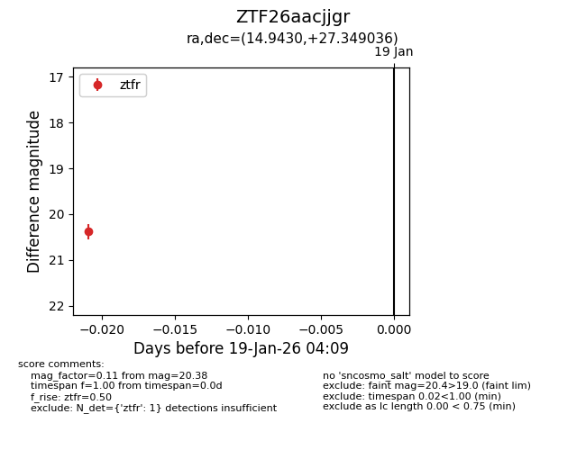
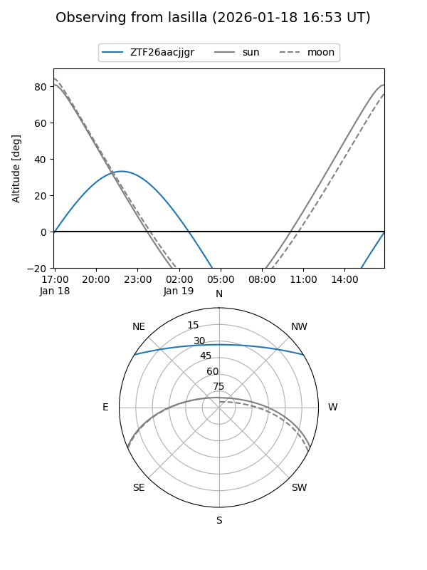
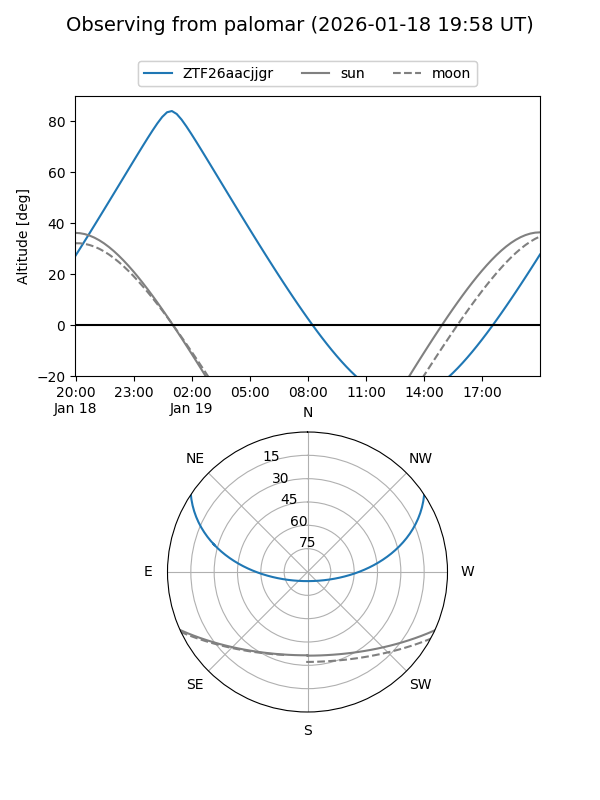

ZTF26aacjjgr
Target ZTF26aacjjgr at 2026-01-19 04:10
Aliases and brokers:
FINK: link
Lasair: link
ALeRCE: link
alt names
ZTF26aacjjgr (ztf,fink_ztf)
Coordinates:
equatorial (ra, dec) = 14.9430,+27.34904
equatorial (HMS+DMS) = 00:59:46.32,+27:20:56.53
galactic (l, b) = (125.2048,-35.48593)
Flags:
Photometry:
last ztfr=20.38
1 ztfr detections
Lightcurve

Visibility


Additional plots